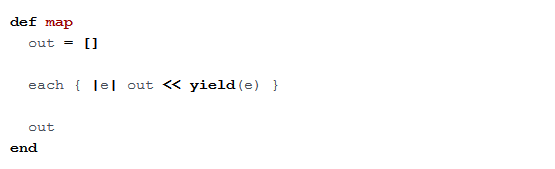

Enumerable#map is an Enumerator object that creates an array and fills it with the results of a list of elements as they are passed through a block of code.
But what's an Enumerator object?
Simply put, Enumerator objects iterate through collections in different ways. In order to check if a class uses Enumerable, you can enter [class_name].included_modules to see if Enumerable is included among the modules for that class. For example, classes like Array and String include Enumerable.
Modules differ from methods because they use mixin. This means a single class can mix in the features of many different modules, which comes in handy because Ruby does not support multiple inheritance of a class by more than one parent class.
More about Enumerable#map
Although Enumerable#map is written in C (click the magnifying lens to view source), this Ruby method is helpful in explaining how the module functions.
As you can see, Enumerable#map simply defines a new array. Then it calls the block that is passed to the method, here demonstrated by yield. The result of calling that block on all the iterations of e are pushed to the new array one by one. Finally, the new array is returned.